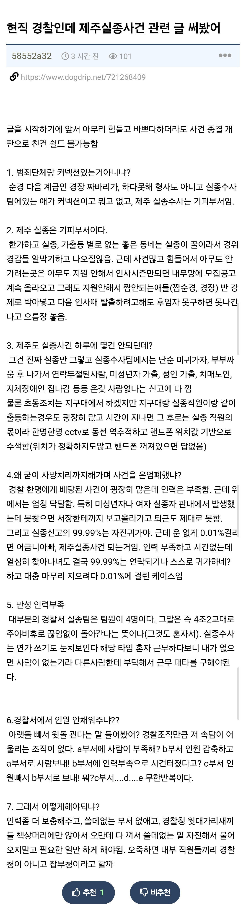
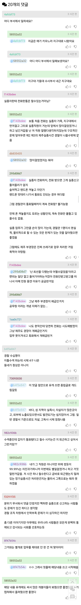

경찰 내부 제도 개선 까지 이루어져라
상황을 알려주는거랑 쉴드치는건 다른건데 구분을 못하냐
구조적으로 어디서든 언젠가는 반드시 일어났을 일이었음
이걸 이해를 못하는건지
이해하면 욕 못하니까 못한 척을 하는건지
거의 대부분의 사람들은 원인따위에는 관심없어ㅋㅋㅋ 그냥 이걸 계기로 하고 싶은 말을 마음대로 짓거릴 뿐
경찰 존나 많이 뽑더만 그 새삥들은 다 어디로 가는거냐?
의경 빠진 기동대를 신입 경찰들로 채움
경찰 월급 깎고 인원늘려라
귤보디아 <- 한번 본 뒤로 뇌리에 박힘
애초에 제주에 특구로 무비자 입국 허용후 외국인 범죄 폭증함 기존 경찰인력으러 커버 다 못침
항상 옳그떠들이 일벌리면 뒤치닥거리는 ㅈ무원들이 하는거지ㅋㅋㅋ
글쓸이 찐이네.
왜 이렇게 됐는지 정확하게 알고있네, 제대로 된 문제파악도 안하고, 이때다 싶어서 조선족 인신매매 썰이나 갖다고 퍼나르는 언론도 문제임.
글쓴이 말대로 제주서부경찰서 관내 실종사건 담당자 아마 4~5명일건데, 제주서부경찰서 관내인구가 약 6만8천명 정도라고 함.
1명 당 1만5천명 담당이고, 야간에는 혼자서 6만8천명을 담당하는 거다.
일을 가라쳐서 처리한건 욕먹을 만하지, 그렇다 치더라도 구조적 문제는 아예 없었다라고 할 수 없음.
니들이 극혐하는 군대식 일처리가 구조적 문제는 무시하고 개인한테 뒤집어 씌우기인거 잊지말아라 개붕이들아.
돌을 던지더라도 제대로 알고 던져라는 거야.
근데 ㅅㅂ 지금 경찰 내부가 저꼬라지인데
체력도 제대로 통과 못하는 애들로 뽑는거임?
체력 제대로 보고 뽑으면 3명이면 될걸
체력 기준도 낮추고 뽑으면 6명 7명 뽑아야되는거 아님?
체력이 좋으면 헤르미온느마냥 시간 2배로쓸수있냐
뭐라는거야 2배로 쓰는게 아니라
인력이 두배가 필요하다는거잖아
어차피 범인 제압 못하거나
수색하는데 험한데 못들어가는 체력이면
그만큼 사람이 더 필요하다는건데
응 그래도 여경 뽑고 스윗해질거야~ ㅋㅋㅋ
솟까 지방엔 꿀빠는 경찰들도 만ㅇㅅ음 부바부야
어느 조직이나 본사, 본청 머릿수 많아지면 겪는 문제인듯
경찰이 없음
사회는 점점 경찰에 요구하는거 점점 더 많아지는데 인원충원은 커녕 정년퇴직하는 인원 보충하기도 모자른 거 현실
내 예상이랑 같네.
결국 단순 태업한 병신 하나 때문에 난 사달인데 저지능 놈들이 뭐 경찰조직이 전부 짜고 종결한거고 덮으려고 한다는 음모론이나 주절대고 있음.
4번ㅋㅋㅋㅋㅋㅋㅋ 퇴근 못하고 야근하는 직장인들 수두룩한데 야근하기 싫다고 사건 종결해버리는 게 정상이냐. 대부분이 그냥 귀가하는데 운나쁘게 걸려서 사건 커졌다는 소리임? 뭔 말같지도 않는 개소리를 하고 앉았어.
솔직히 경찰애들 존나 불쌍함
특히 수사과 있는 애들
괜히 사건 적체되는 게 아니고
괜히 수사과 간 애들이 휴직계 내고 도망치는게 아님..
능력의 문제가 아예 없진 않지만
물리적으로 불가능한 수준의 일을 시키고 있음
병신 윗대가리랑 국회에서는
현실도 안 쳐다보고 지침 만들고 법 만들고 개지랄떰
이런 상황은 비단 한국에서만 문제가 된 게 아님
이미 선진국들도 비슷한 일 겪었고
개혁 중임
뭐 시발 정치인새끼들이 힘겨루기 한다고
검찰이 어쩌구 경찰이 어쩌구 하지만
결국 현실파악도 못하고 하는 밥그릇싸움임
그 피해는 그대로 국민들이 받고 있고..
정치적 분쟁이 심화될수록 나라는 산으로 감
그래서 나도 한 때 정치에 관심을 많이 가졌지만
지금은 쳐다도 안 봄
그만큼 정치적 신념이 무서운 거임
지금은 완전 종교 수준이더만...
제주도 실종 사건 부서는 바쁠거 같긴함
20대 ~30대 미혼남녀들이 놀러가서 술마시고 퍼질러지는 경우 많은거 같긴함.. 게하 파티같은 것도 한 몫하고 부모들은 연락 안되면 일단 실종 신고 넣고..
참고로 나도 친구들이랑 여행 갔다가 게하 파티갔다 아침에 한 새끼 안보이길래 신고해야하나 하다가 점심쯤 나타나서 에휴 했던 경험도 있고